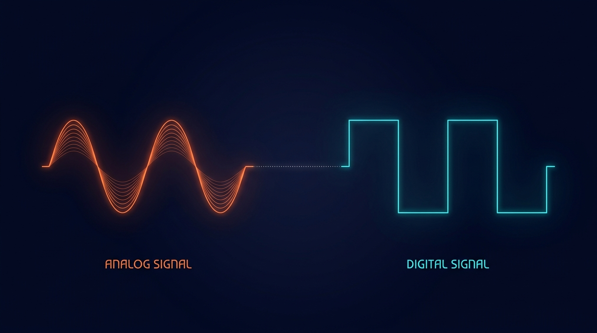
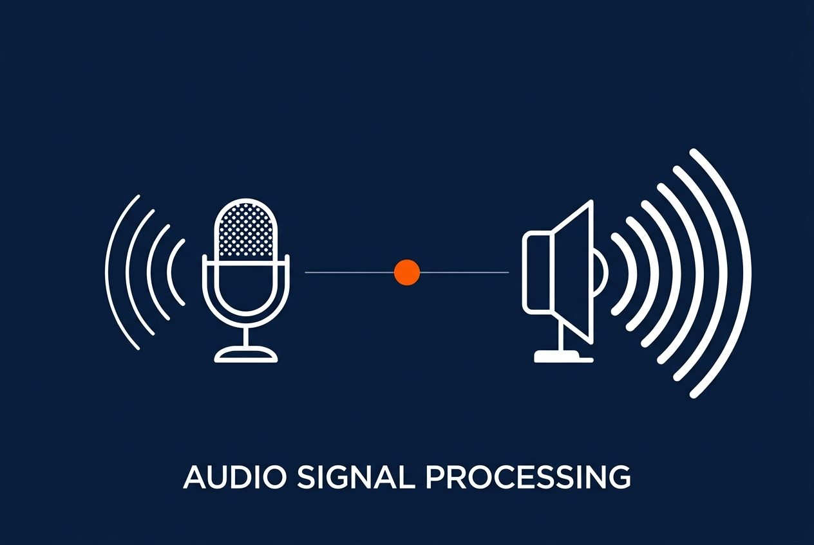
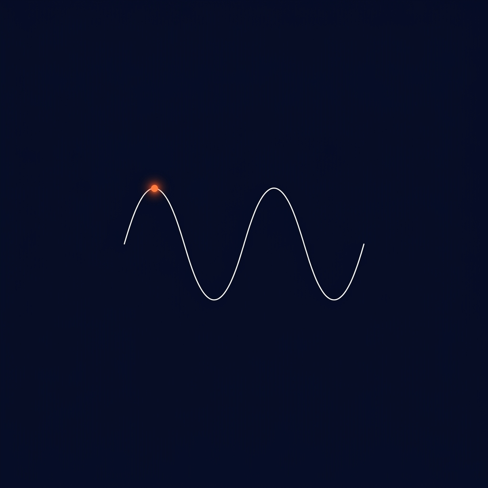
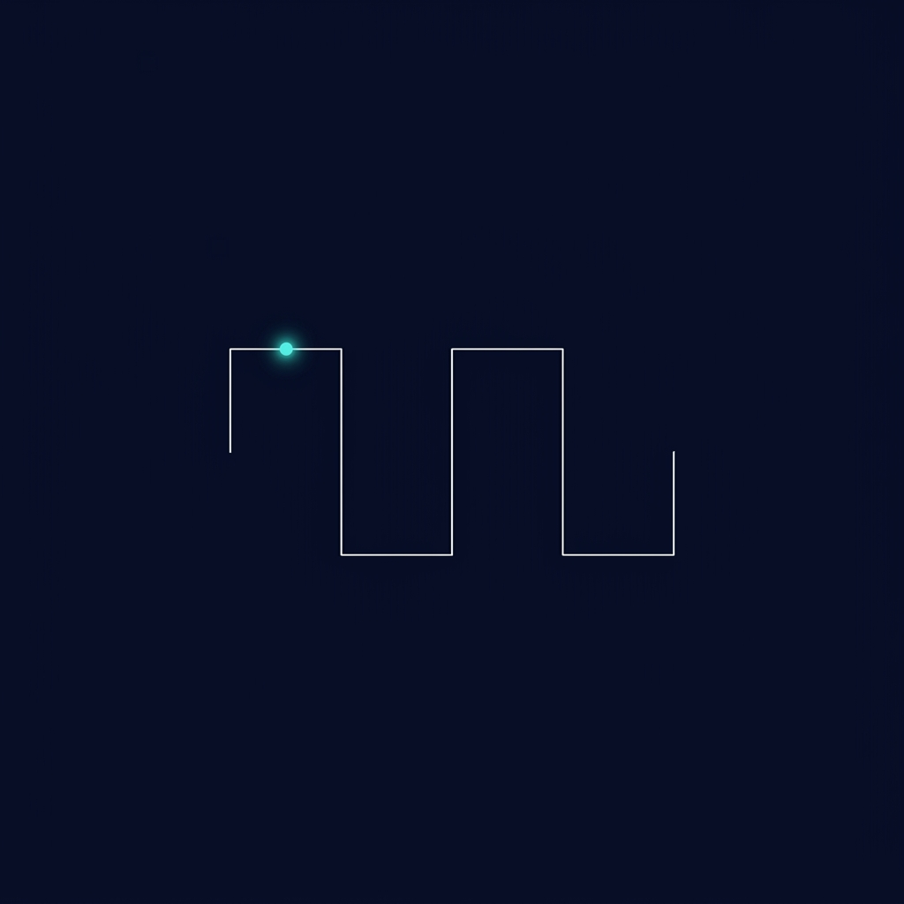
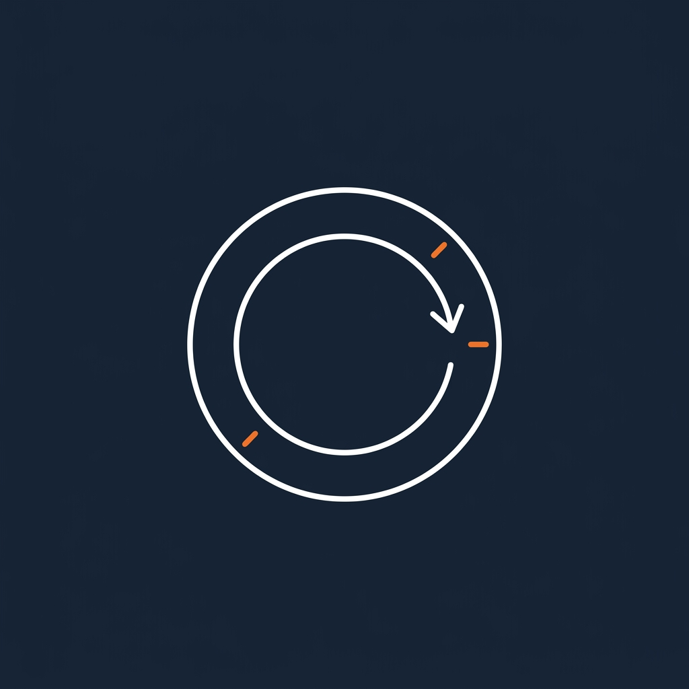
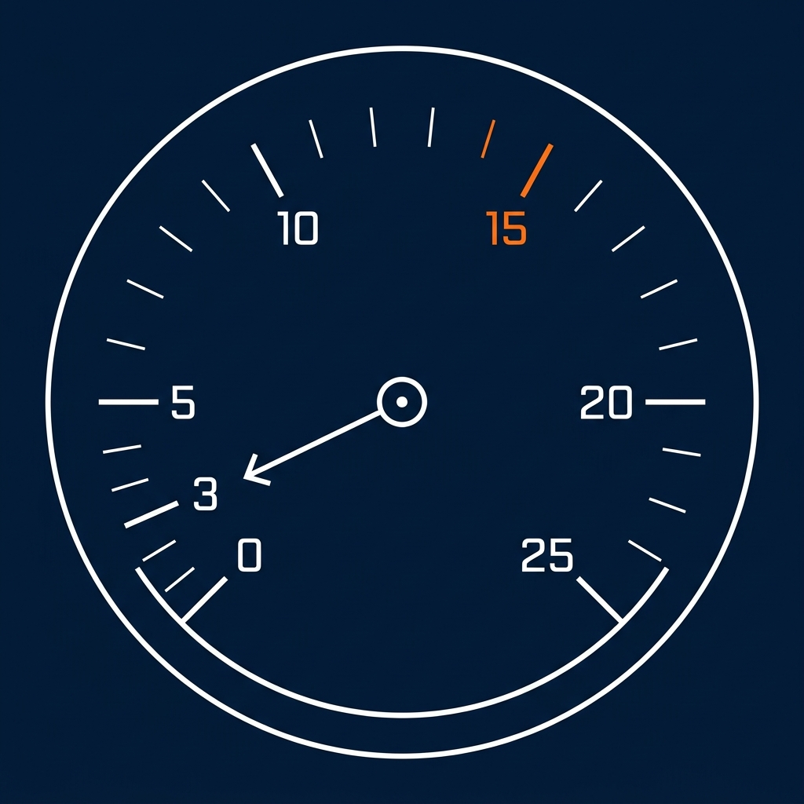
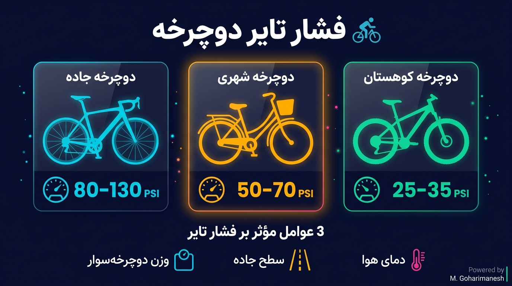
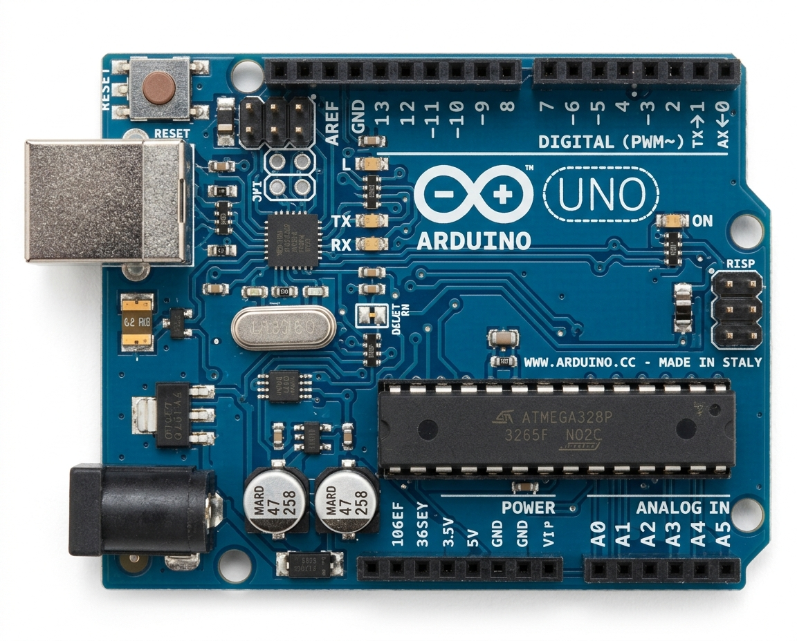

تعریف سیگنال
سیگنال، نمایش تغییرات یک کمیت فیزیکی نسبت به زمان است که
حامل اطلاعات میباشد.
سیگنالها به دو دستهٔ اصلی تقسیم میشوند: آنالوگ و دیجیتال.
آنالوگ، دیجیتال، ۴-۲۰mA و PWM

وقتی در میکروفون صحبت میکنید، صدای شما یک سیگنال آنالوگ است.
اما وقتی همان صدا را در اسپیکر میشنوید، به سیگنال دیجیتال تبدیل شده؟
این تبدیل چگونه اتفاق میافتد و چه استانداردهایی دارد؟

سیگنال، نمایش تغییرات یک کمیت فیزیکی نسبت به زمان است که
حامل اطلاعات میباشد.
سیگنالها به دو دستهٔ اصلی تقسیم میشوند: آنالوگ و دیجیتال.

سیگنالی که در هر لحظه از زمان هر مقداری میتواند داشته باشد. پیوسته و بیوقفه تغییر میکند.

سیگنالی که فقط در مقادیر مشخصی وجود دارد. معمولاً دو حالت (۰ و ۱) دارد.
| ویژگی | آنالوگ | دیجیتال |
|---|---|---|
| ماهیت سیگنال | پیوسته (Continuous) | گسسته (Discrete) |
| دقت | محدود به نویز | بالا و قابل کنترل |
| مصونیت به نویز | ضعیف | عالی |
| ذخیرهسازی | مشکل | آسان |
| پردازش | سخت | آسان |
| هزینه انتقال | بالا در فواصل طولانی | کم |
| کاربرد | سنسورها، صدا، تصویر | کامپیوتر، IoT |

در سیستمهای صنعتی، سیگنالهای آنالوگ با جریان حلقه ۴-۲۰mA منتقل میشوند. استاندارد توسط ISA تعریف شده است.
سیگنال ضربان قلب در مانیتورینگ بیمارستانی با جریان ۴-۲۰mA منتقل میشود.
۴mA = آرام، ۲۰mA = پرشسنسورهای وزن در باسکولهای سنگین صنعتی.
۴mA = خالی، ۲۰mA = پراندازهگیری pH در پالایشگاهها و تصفیهخانهها.
۴mA = pH 0، ۲۰mA = pH 14ترانسمیترهای فشار در خطوط لوله نفت و گاز.
۴mA = ۰ bar، ۲۰mA = maxدمای کورههای صنعتی در ذوب فلزات.
۴mA = ۰°C، ۲۰mA = ۱۰۰۰°Cاندازهگیری دبی سیال در صنایع شیمیایی.
۴mA = صفر، ۲۰mA = حداکثراگر جریان به ۰mA برسد، یعنی سیم قطع شده. با ۰-۲۰mA این تفکیک ممکن نبود.
جریان در مدار حلقه ثابت میماند و در برابر نویز مقاوم است.
سنسور انرژی خود را از همان حلقه دریافت میکند (Loop Powered).
میتوان سیگنال را تا چند صد متر بدون افت منتقل کرد.

در محیطهای قابل اشتعال به جای سیگنال الکتریکی، از هوای فشرده با فشار ۳-۱۵psi استفاده میشود.

PWM (Pulse Width Modulation) یک تکنیک برای تولید سیگنال آنالوگ با استفاده از خروجی دیجیتال است. با تغییر عرض پالس، میتوان مقدار میانگین ولتاژ را کنترل کرد.
چراغهای LED با PWM روشنایی خود را تنظیم میکنند.
فن کامپیوتر و موتور دیسی با PWM سرعت خود را تغییر میدهند.
شارژرهای موبایل از PWM برای تنظیم ولتاژ استفاده میکنند.
هیترها و کورههای برقی با PWM دمای خود را تنظیم میکنند.
روی میکروفون کلیک کنید
سپس صحبت کنید یا فریاد بزنید
ببینید صدا چگونه به PWM تبدیل میشود!
تابع analogWrite() مقدار PWM را روی پینهای با علامت ~ تنظیم میکند. مقدار ورودی بین ۰ و ۲۵۵ است.
پینهای PWM در Arduino UNO: ۳، ۵، ۶، ۹، ۱۰، ۱۱ (با علامت ~)

Arduino UNO شش پین آنالوگ دارد که ولتاژ پیوسته از سنسورها (مثل پتانسیومتر، LM35، LDR) دریافت میکنند.
۱۰ بیت = ۲۱۰ = ۱۰۲۴ پله. ولتاژ ۰ تا ۵ ولت به اعداد ۰ تا ۱۰۲۳ تبدیل میشود.
ADC = (V × 1023) / 5
آنالوگ پیوسته، دیجیتال گسسته. مثالها: صدا و رادیو در برابر USB و Wi-Fi.
استاندارد طلایی صنعت. مثالها: ECG، لودسل، pH متر، فشار، دما، فلومتر.
معادل پنوماتیکی. مثالها: ۳۲psi تایر خودرو، ۶۵psi دوچرخه، ۱۴.۷psi اتمسفر.
PWM: پل آنالوگ به دیجیتال (روشنایی، موتور، صدا). ADC: ۱۰ بیتی، ۱۰۲۴ پله.
هر گروه یک وسیلهٔ خانگی کاملاً آنالوگ انتخاب کرده و در قالب پوستر یکصفحهای پیشنهاد دهد چگونه آن را دیجیتال و هوشمند کند.
🎯 پوستر باید شامل: بلوکدیاگرام، نوع سنسور، روش تبدیل ADC، و سناریوی کاربرد جدید.
🏆 بهترین ایده با رأیگیری انتخاب میشود.
از توجه و همراهی شما سپاسگزارم
منابع پیشنهادی: Measurement Systems (Doebelin) — فصل ۲